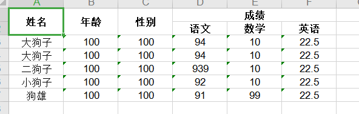
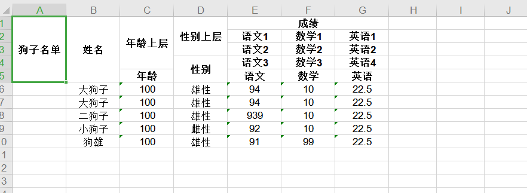

领导：“我有件事和你商量下。”我：“什么事？”领导：“客户让我开发四个报表导出，两天时间。”我恐防有诈，道：“模板发我看下。”
打开模板一看，从一级表头到四级表头都有。我：“这个……两天做不完。”领导：“能者多劳。”我：“多劳多得。”领导：“你从哪里听的这些乱七八糟的歪理？”
做完二级表头的导出，头昏脑涨，突生辞职冲动。因为一旦列位置不对，就得去茫茫码海里找哪里写错了。
于是，我绞尽脑汁封装了个工具类。
项目地址：
github：https://github.com/lieyanfeimao/PoiExcelExport.git
码云：https://gitee.com/edadmin/PoiExcelExport.git
注：因为我在项目中使用的是poi-3.7，所以本程序使用的也是poi-3.7，我粗略测试了一下，最新的版本里面已经去掉了很多东西，本程序无法在最新版本的poi下使用，没测试最高能兼容到哪个版本。本程序可直接用于导出，有多种模式和配置，但是不建议用于大数据导出（怎样算大数据？看你服务器有多强）。大数据导出个人觉得应该用POI另一种不消耗内存的模式。所以，您可以参考本程序的设计思路，自行设计用于大数据导出的程序。
本项目用于导出的数据格式为List<Map<String,Object>>，您的数据可能是List<Object>，这不支持。请自行编写程序使用反射进行导出。或者，只使用本项目的生成表头功能。本项目创建的初衷便是创建表头，生成Excel只是附带功能
import java.io.IOException;
import java.util.ArrayList;
import java.util.HashMap;
import java.util.List;
import java.util.Map;
import com.xuanyimao.poiexcelexporttool.ExcelExportManager;
/**
* http://www.xuanyimao.com
* @author:liuming
* @date: 2020年10月12日
* @version V1.0
*/
/**
* @Description:
* @author liuming
*/
public class SimpleTest {
public static String json1="[" +
" [" +
" {field:'name', title: '姓名', width:10, rowspan: 2, comment:'这是批注'}," +
" {field:'age', title: '年龄', width:10, rowspan: 2}," +
" {field:'age', title: '性别', width:10, rowspan: 2}," +
" {title: '成绩', width:10, rowspan: 1,colspan:3}" +
" ]," +
" [" +
" {field:'yw', title: '语文', width:10}," +
" {field:'sx', title: '数学', width:10}," +
" {field:'yy', title: '英语', width:10}" +
" ]" +
"]";
public static void main(String[] args) {
List<Map<String,Object>> datas=initData1();
ExcelExportManager em=ExcelExportManager.Builder();
try {
String fileName=em.createExcel("D:/exceltest", json1, datas);
System.out.println("生成的excel文件："+fileName);
}
catch (IOException e) {
// TODO Auto-generated catch block
e.printStackTrace();
}
}
/**
* 初始化数据
* @author:liuming
* @return
*/
public static List<Map<String,Object>> initData1(){
List<Map<String,Object>> list=new ArrayList<Map<String,Object>>();
Map<String,Object> map=new HashMap<String, Object>();
map.put("name", "狗王");
map.put("age", 100);
map.put("sex", "雄性");
map.put("sx", 10);
map.put("yy", 22.5);
map.put("yw", 998);
list.add(map);
map.put("name", "大狗子");
map.put("age", 100);
map.put("sex", "雄性");
map.put("sx", 10);
map.put("yy", 22.5);
map.put("yw", 94);
list.add(map);
map=new HashMap<String, Object>();
map.put("name", "二狗子");
map.put("age", 100);
map.put("sex", "雄性");
map.put("sx", 10);
map.put("yy", 22.5);
map.put("yw", 939);
list.add(map);
map=new HashMap<String, Object>();
map.put("name", "小狗子");
map.put("age", 100);
map.put("sex", "雌性");
map.put("sx", 10);
map.put("yy", 22.5);
map.put("yw", 92);
list.add(map);
map=new HashMap<String, Object>();
map.put("name", "狗雄");
map.put("age", 100);
map.put("sex", "雄性");
map.put("sx", 99);
map.put("yy", 22.5);
map.put("yw", 91);
list.add(map);
return list;
}
}
看看这个用于导出的JSON数据，是不是想到了easyui的table，亦或是layui的table，亦或是其他的数据表格(广告位招租)？是的，这两种表格的cols配置稍加修改，便可直接用于本导出程序。
在这个JSON为王的时代，用JSON封装个创建自定义的任意级表头的工具类实在是再好不过了！如果您曾使用过datagrid或laytable之类的插件做过表格，那就很容易理解了。
若在使用过程中发现BUG，请尽管提出，反正我不会改。
下面以狗子的成绩为例，用JSON 配置一个简单的表头
[
[
{field:'name', title: '姓名', width:10, rowspan: 2, comment:'这是批注'},//似乎批注只在xlsx版本中有效
{field:'age', title: '年龄', width:10, rowspan: 2},
{field:'sex', title: '性别', width:10, rowspan: 2},
{title: '成绩', width:10, rowspan: 1,colspan:3}
],
[
{field:'yw', title: '语文', width:10},
{field:'sx', title: '数学', width:10},
{field:'yy', title: '英语', width:10}
]
]

JSON结构详解：
表格配置数据为一个二维数组对象，数组的每个维度代表一行，即array[0][0]为第一行，array[0][1]为第二行
二维数组内是一个对象，包含表头和单元格的配置属性
JSON属性值详解：
field：字段名。对应数据集合(List<Map<String,Object>>)中Map的Key。多级表头中，一列只需设置一次此值。
title：列名。Excel表头的列名
width：单元格宽度。一般一个汉字的宽度为2
colspan：单元格跨多少列，默认为1。横向合并指定个数的单元格
rowspan：单元格跨多少行，默认为1。纵向合并指定个数单元格。
titleStyle：表头样式。可通过接口设置或通过模板文件设置
cellStyle：单元格样式。可通过接口设置或通过模板文件设置
comment：批注。有时候设置了不显示，原因不明。
Excel模板文件：
模板文件可用于按照模板生成Excel，也可以只用于获取单元格样式。
如果导出数据的单元格样式来自于模板文件，则需要配置模板对象的templetCellStyles属性，以告诉程序如何处理指定位置的单元格样式
再来个复杂点的5级表头
[
[
{title: '狗子名单', width:10, rowspan: 5},
{field:'name', title: '姓名', width:10, rowspan: 5, comment:'这是批注'},
{field:'age', title: '年龄上层', width:10, rowspan: 4},
{field:'sex', title: '性别上层', width:10, rowspan: 3},
{title: '成绩', width:10, rowspan: 1,colspan:3}
],
[
{field:'yw', title: '语文1', width:10},
{field:'sx', title: '数学1', width:10},
{field:'yy', title: '英语1', width:10}
],
[
{field:'yw', title: '语文2', width:10},
{field:'sx', title: '数学2', width:10},
{field:'yy', title: '英语2', width:10}
],
[
{title: '性别', width:10, rowspan: 2},
{field:'yw', title: '语文3', width:10},
{field:'sx', title: '数学3', width:10},
{field:'yy', title: '英语4', width:10}
],
[
{field:'age', title: '年龄', width:10},
{field:'yw', title: '语文', width:10},
{field:'sx', title: '数学', width:10},
{field:'yy', title: '英语', width:10}
],
]

该装的装完了，开始进入正题。分析并写出这个程序。
略（自己看注释吧，一下写不清楚，写着写着把自己写蒙了，后面有空再写）